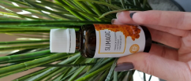

Arritja ime me te madh personal
Uh ... ku të filloj...
Atëherë. Dua te filloj me falënderime për mbështetjen, komplimentet dhe fjalë të mira)) Është me të vërtetë shume e bukur ... (pse jo, unë e meritoj) 😂
Për ata që sapo u bashkuan me mua, unë jam Manjola dhe ky është blogu im se si kam humbur peshë
Le të fillojmë) I gjithë procesi i humbjes së peshës) Brenda vitit!
Nga 120 kg në 75 kg, kjo sigurisht që nuk është fundi) do humbas edhe 15 kg te tjera)
Kush interesohet - gjatësia 177, mosha 33, numri i telefonit +7996 .. (bëj shaka)

Historia ime: Unë isha shumë i gjatë si fëmijë dhe nëna ime më dërgoi te seksioni e basketbollit, gjithçka shkonte mirë për mua dhe madje mendova për një karrierë serioze, por ndodhi një tragjedi dhe trajneri im i preferuar vdiq. Kjo më lëndoi me të vërtetë, nuk doja të luaja më, nuk mund ta shihja topin. Dhe fillova të haja shumë, pesha ime u rrit .
Nuk u ktheva në basketboll. Unë nuk kam miq në shkollë, me përqeshnin në shkollë për shkak të gjatësisë, kam qenë një kokë më gjatë nga të gjitha vajzat, Për djemtë s`po ju them dot ... Kur isha 13 vjeç, pesha ime ishte 80 kg, por nuk më shqetësoi në atë moment. Unë shkoja në shkollë, kthehesha dhe haja, haja, haja ... Prindërit e mi u përpoqën të më ndihmonin, por pa efekt.
Kanë kaluar 5 vjet dhe unë jam ulur këtu një lope e trishtuar prej 110 kg dhe po më bihen lotët që askush nuk më do) nuk kam as shokë, as punën qe do doja ... Me përqeshnin .. Kam dëgjuar shpesh që jam lopë, trashaluqe etj. Nuk e kisha probleme .. U mësova ...

Kaluan 10 vjet të tjera, u mësova, gjeta një punë të mirë ... gjithçka dukesh si të gjithë të tjerët ... por unë kisha një ëndërr .. të takoja një njeri që do me doje ashtu siç jam, dhe do të bëhem për të më mirë, më e bukur dhe do behëm ashtu siç jam ne të vërtet.
Dhe në 28 ëndërroj (budallaqe)))
Nuk po e gjeja dot, çudia e vërtetë, a?) Unë e gjeta një shoqe, e cila ishte pikërisht ajo që i duhej, e ashpër dhe e drejt, por gati për të mbështetur në të njëjtën kohë.
Dhe ajo ma çoi kokën në vend, po deshe një burrë dhe fëmijë, shko dhe puno vetë!!!!Shiko vetë:
- Ky është shëndeti yt!
- Është jeta jote!
- Është turp të vraposh në stadium? Mos nuk është turp të jesh e shëndoshë?
- Ik bëj palestër!
Dhe unë u ngrita dhe ika!

Ne këto foto jam rreth 120 kg
5 kg të parë Kam humbur në shtëpi, duke bërë ulje 10 herë, duke bere situp (brenda mundësi), pllankë për 10 sekonda ishte një arritje për mua ..
nuk haja pas orës 18:00
Përjashtova bukën, gjalpin, makaronat, biskotat, etj. tufa, duke e lënë veten të haja pak sheqer ne mëngjes)
Pastaj fillova të vrapoja ... E dija që me një peshë të tillë do dëmtoja
nyjat,por prapë vendosa .. Vështirë të quhesh atë vrap! Ecja shpejt nëpër stadium, pastaj vrapoja për 15 metra. Por në atë moment ishte një nivel për mua .. gradualisht u përpoqa të vrapoja pak më shumë ..
Më dhembnin këmbët.. pas çdo vrap ma përvëlonin si ferr .. pas çdo aktivitet me dhimbtë tërë trupi 2 herë në javë 10 kg të parë Isha e acaruar nga dhimbja e muskujve dhe ndjenja e urisë ..
Po qaja shumë, thosha që do të le gjithçka .. me lot shkoja në stadium .. vrapoja dhe qaja ..
Shoqja ime gjithmonë në këto momente bisedonte me mua në telefon dhe me thoshe që unë isha më e bukura, se tashmë kisha bërë shumë gjëra që nuk mund të ndaloja .. domethënë ma jepte mbështetje morale të plotë ... dhe ankthi zëvendësohesh me zemërimin, për se unë sillesha si histerike me karakter të dobët, dhe shkoja për të ushtruar .. me zemërim dhe këmbëngulje)
Pas gjysmë viti humba 20 kg Si përfundim me zinte vaska ^) dhe kuptova se dhimbja e muskujve lehtësohej nga uji i nxehtë ...
Pastaj u ndjeva më i sigurt! Fillova palestrën. Gjithçka shkoi sipas planit, pesha ngadalë po largonte, unë u mësova të rri pothuajse pa ngrenë … Por, më pas, papritmas pesha ndaloi… Më zuri paniku. Natyrisht, fillova të angazhohem edhe më shumë duke e lodhur veten nga grevat e urisë dhe dietat ... Por asgjë nuk ndihmoi. Një ditë të tmerrshme u peshova dhe O ZOT +4 kg (((

Rashë ne depresion, gjysmë viti e një pune kaq të vështirë dhe gjithë pjesën tjetër ... I lashë gjithçka përsëri, u mbylla në shtëpi dhe fillova të haja. Natyrisht, pesha u rrit përsëri, por nuk u shqetësova, i dhashë fund vetes, jetës time dhe ëndrrave të mia .. Unë jam unë, por jo shoqja ime, gjë për të cilën i jam shumë mirënjohës asaj!!!
Ajo filloi të kërkojë mënyra alternativë të humbur peshë,ishte ajo, jo unë!!! Unë nuk i jepja rëndësinë fare ... Ajo shikonte programe, lexonte artikuj, libra dhe në përgjithësi gjithçka që mund të gjente, dhe më sillte material të përmbledhur, por unë refuzoja gjithçka ... Një muaj më vonë, shoqja ime erdhi me vrap tek unë dhe me tha: "Unë e gjeta atë që të duhet! "Dhe më tregoi një artikull nga një revistë amerikane, ku tregonin për Slimagic . Unë isha skeptike sepse nuk besoja se mund të humbisja peshe, sepse të gjithë thonë gjithmonë se për të humbur peshë, ju duhet të vuani nga uria dhe të lodheni me stërvitje, mirë, ose për njerëz të pasur dhe të dëshpëruar ekziston një opsion tjetër- operacion ... por unë lexova artikullin, po ju tregoj shkurt: Slimagic - një lende unike e bazuar në propolis për humbjen e peshës. Ju lejon të eliminoni shpejt dhjamin e trupit dhe të fitoni një trup elegant, pa përdorur dieta dhe stërvitje të lodhshme.
Shtoni në një gotë me ujë, trazoni dhe pini 20 minuta para mëngjesit. Përsërisni në darkë. Dhe brenda një muaj mund të humbisni deri në 30 kg .
Përrallë e bukur, apo jo? Por ishte e pamundur të refuzoja, nëse jo për hir të vetvetes, më paktën për hir të mikeshës sime, e cila u përpoq aq shumë për të më ndihmuar, çfarë mund të humbja përveç peshës? )))
Ne filluam ta kërkojmë këtë ilaç në Greqi, doli që Slimagic i kaloi të gjitha provat klinike, është i patentuar dhe ekziston një faqe zyrtar ne internet ku mund ta blinim me një çmim shumë konkurrues. Nuk mund të imagjinoj dot se sa do të kushtonte në një farmaci, duke pasur parasysh që përbërja është plotësisht natyral ... porosita një kurs dhe nga ai moment filloi JETA ime E RE

Atëherë:
Dita e parë
Në mëngjes piva 12 pika me një gotë ujë, 20 minuta para mëngjesit, mëngjes si zakonisht. Në mbrëmje përsërita të njëjtën gjë.
Dita e dytë
Çdo gjë është e njëjtë si në ditën e parë. Pa ndryshim.
Dita e Tretë
Ditën e tretë, unë vura re që me iku oreksi iku oreksi, dhe energjia ime u rrit tre herë
Dita e shtatë
u peshova dhe humba pothuajse - 4 kg. Vetëm se kam pirë pika.
Nuk do t'i përshkruaj gjatë gjithë ditëve, do të shkruaj shkurt.
Në ditën e 10, në bel ishte - 10 cm. Në 21 në peshore - 15 kg WOW!!! Unë e arrita këtë rezultat për gati gjysmë viti në greva të urisë dhe trajnimit. Në përgjithësi, për muajin e parë me Slimagic kam humbur 21 kg!!! Mund ta besoni? Unë nuk munda! Por në të vërtetë është!
Nuk ndalova këtu, e vazhdova më tej dhe tani, pas tre muajsh nga 140 kg, arrita të humb peshë deri në 80 kg, mbetën edhe 15 të tjera)))
Dhe unë do t'ju them një sekret: "E gjeta Princin tim!)"


Komente
Manjola, sa vajzë zgjuar jeni, unë jam shumë e lumtur për ju, shoqja juaj është thesar! Do doja të kisha një të tillë, por ti më ke dhënë shpresë se gjithçka është e mundur. Padyshim që do të porosis Slimagic
PërgjigjeAnita, faleminderit shumë! Do ta tregoj patjetër!
Përgjigjume një shoqen time po mbaja dietë me pjeshkë, arrita të humbja -4 kg, pastaj pesha gjithashtu u kthye dhe ngeli për një javë, porosita ilaçin, ata e dërguan brenda 4 ditëve direkt në apartament me korrier, unë përdora për 5 ditë dhe gjatë kësaj kohe e kam rënë 4 kg, shpresoj se pesha nuk do t’i
kthehetLira, jo pesha nuk do të kthehet, ajo vetëm do të iki, më besoni)
PërgjigjuUnë jam gati 42 vjeç, por pasi humba peshën fillova të dukem 5 vjet më te re, kryesisht për shkak se gjendja e lëkurës u përmirësua, dhe një bonus tjetër- nuk ka efekte anësore
Me la i dashuri im, unë ende e dua atë, ai më ushqeu gjithmonë pica dhe ushqim të shpejtë dhe tani kam shumë vithet, miqtë e tij nuk më pëlqyen mua dhe ata thanë që isha shume e shëndoshe, shkova në palestër por pesha nuk u lëviz, pash një reklamë dhe porosita këtë ilaç,e po, një muaj më vonë ish-i dashuri im më pa dhe më tha që isha shumë elegante, tani jemi përsëri bashke
krahasim me ilaçet të farmacisë, vetëm ky me dha efekt, humba -3 kg në javë, këtu e pashe rezultatet më të mira, por unë nuk jam e dëshpëruar, kam peshën të vogël
PërgjigjuNuk me duhesh të ndryshoja jetën time të përditshëm! Zakonisht, kur jeni duke humbur peshën, ju duhet të ndiqni dietat, dhe përveç kësaj, të shkoni në palestër, por tani, pa asnjë përpjekje, falë përbërësve natyrorë të përzgjedhura, dhe pas 3 javësh arrita të kem një figurë seksi dhe organizëm të ushqyer më vitamina.
 PërgjigjuEdhe unë vendosa të provoj ilaçin . Ja çfarë kam arritur për në 1 muaj: minus 12 kg peshë të tepërt dhe minus 10 cm në bel. Kështu që njerëzit, nëse keni nevojë të humbni peshë shpejt, atëherë Slimagic është ai që ju duhet
Goca, ju këshilloj të porosisni! Djegës i dhjamit të shkëlqyeshëm . Ai jo vetëm që ndihmon në humbjen e peshës, por gjithashtu i siguron vitamina dhe minerale për organizëm gjatë procesit të humbjes së peshës. Dhe kjo do të thotë që gjithashtu forcon flokët dhe thonjtë, ngre imunitetin. Jam shumë i kënaqur që unë, falë kompleksit humba 9 kg brenda javës dhe fitova një rritje të energjisë.
PërgjigjuA e dini nëse ky ilaç ka certifikatat të cilësisë, sepse ka të gjitha këto aftësie jo vetëm për të djegur dhjamin, por edhe për të rinovuar trupin? Dhe a është me të vërtetë e mundur që trupi bëhet qiri në vetëm 2-3 javë? A ka ndjekim të keq për gjendjen e sistemit nervor? Kam kaq shumë pyetje, kërkoj falje, por për veten time është shumë e rëndësishme.
PërgjigjeKejsi, po, patjetër qe ka certifikata. Sa për pyetjet të tjera, të them nga përvoja ime, ilaçi nuk ndikon keq në sistemin nervor, por përkundrazi, gjendja shpirtërore përmirësohet, ke shumë forcë dhe energji, Trupin e kam të e bukur është e dukshme në foto. Më mirë, shkoni në faqen zyrtare të internetit për të lënë një kërkesë, menaxheri do t'ju telefonojë dhe do t'ju përgjigjet të gjitha pyetjeve.
PërgjigjuSi një nutricioniste, konfirmoj që kompleksi funksionon në mënyrë efektive, përmban vetëm përbërës natyralë, nuk përmban substanca të dëmshme që shpesh shkaktojnë alergji dhe probleme me stomakun. Në përgjithësi, Slimagic është djegësi me i njohur i dhjamit në vitin 2019, ai rregullon sistemin e tretjes dhe funksionimin metabolik për të punuar siç duhet. Ekstrakti të vajrave të pishës se egër dhe çajit së bashku normalizon sistemin nervor qendror, përmirëson strukturën e flokëve dhe lëkurës, pastron fytyrën (eliminon aknet), liron rezervat të vjetra të yndyrës. Është e rëndësishme vetëm që të përdorni djegësin e dhjamit në mënyrë korrekte dhe të mos zvogëloni ose tejkaloni dozën, atëherë për një kohë të shkurtër ju thoni lamtumirë për 10-15 kg .
PërgjigjuSi behet pagesa? A mund të jep alergji ky ilaç? Për mua, për trupin tim, kjo e fundit është shumë e rëndësishme. Kam lexuar që ilaçi gjithashtu ndihmon për të përmirësuar gjendjen e përgjithshme të trupit. A është e vërtet?
PërgjigjuNeri, ky djegës dhjamësh vërtet bën punën. Ne krahasim me ky, ilaçet me te reklamuara nuk bëjnë. Përdorni vetëm në përputhje me udhëzimet dhe atëherë efekti do të shfaqet mbas një javë. Ju paguani korrierin para në dorë.
Përgjigju